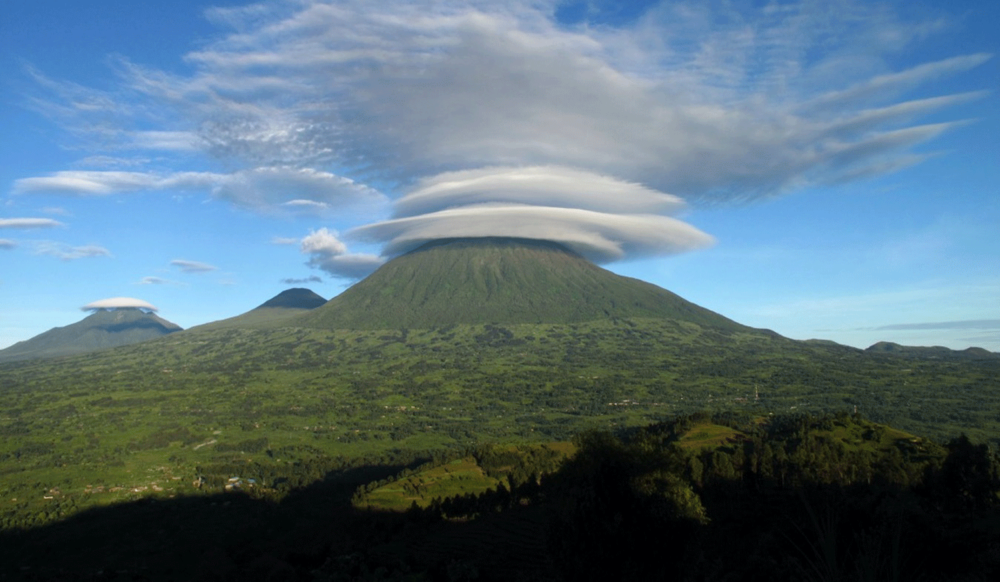
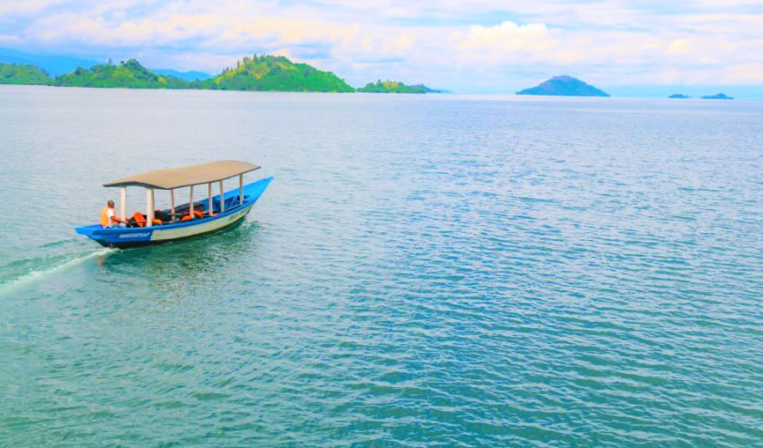
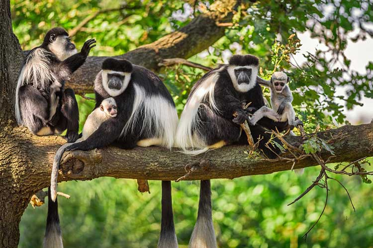
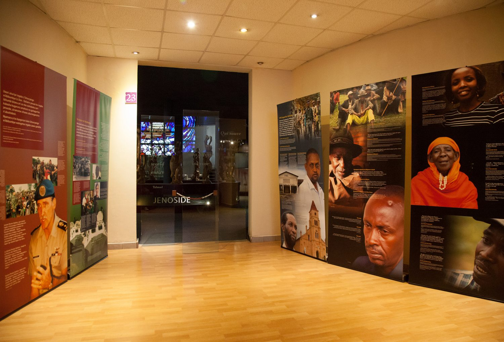
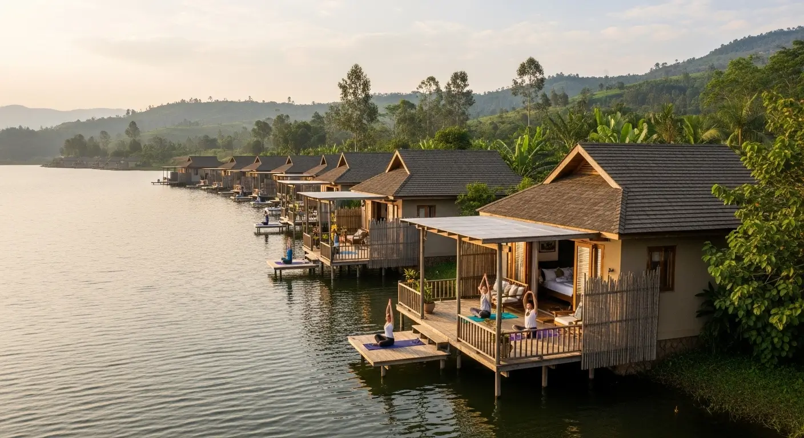

Volcanoes
Mount Bisoke
Mount Nyiragongo
Mount Nyamuragira

Lake Kivu
Lake Kivu is one of Africa’s Great Lakes, located on the western border of Rwanda with the Democratic Republic of Congo. It is known for its stunning blue waters, scenic shores, and relaxing beaches. Visitors can enjoy boat rides, water sports, and lakeside resorts, while exploring nearby towns like Gisenyi and Kibuye. The lake’s unique charm and peaceful environment make it a perfect destination for leisure and adventure alike.

Nyungwe & Akagera Park
Rwanda is home to two of Africa’s most amazing parks. Nyungwe Forest National Park, in the southwest, is one of Africa’s oldest rainforests, rich in biodiversity with over 13 primate species including chimpanzees and colobus monkeys. Visitors can enjoy its famous canopy walk, scenic hiking trails, and beautiful waterfalls. In the east, Akagera National Park offers stunning savannah landscapes, lakes, and wetlands. It is home to the Big Five—lions, elephants, buffaloes, leopards, and rhinos— and provides unforgettable experiences with game drives, boat safaris on Lake Ihema, and bird watching.
.jpeg)
Kings House
Come and discover the beauty and history of the King’s Palace Museum, where Rwanda’s rich royal heritage comes to life. Step into a unique cultural experience and explore the traditions, architecture, and stories of Rwanda’s ancient monarchy.

Kigali Genocide Memorial
Come and explore the fascinating history and culture at the Kigali Genocide Memorial, a place of remembrance and learning about Rwanda’s past. Experience powerful stories, meaningful exhibits, and a journey that inspires reflection, understanding, and hope.

Lake Muhazi
Come and relax by the scenic shores of Lake Muhazi, where calm waters and fresh air create the perfect getaway. Enjoy peaceful views, fun activities, and a refreshing escape into nature.

Kigali Universe
Come and enjoy endless fun at Kigali Universe, where you can experience exciting games like bowling, arcade machines, VR games, billiards, and racing simulators. With so many different activities, it’s the perfect place for entertainment and unforgettable moments with friends and family.